La violencia doméstica no frena.
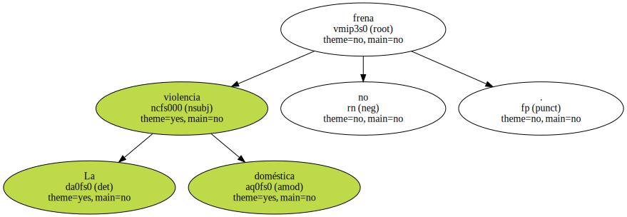Esta misma semana , dos mujeres fueron agredidas , una de ellas mortalmente , y dos niños de corta edad , apuñalados por su padre.
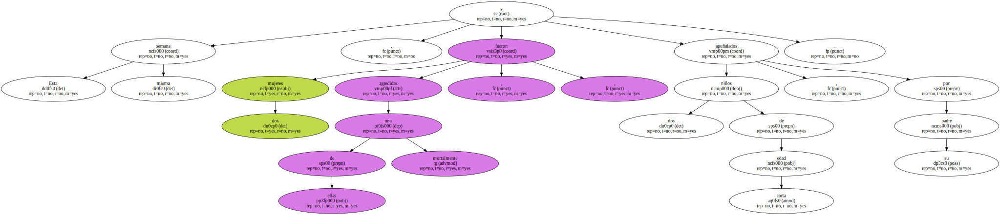Ante la reiteración de estos casos , los jueces catalanes empiezan a adoptar cada vez medidas más drásticas y apuestan por prohibir a los maltratadores que se acerquen a sus víctimas como medida cautelar - - antes de la condena - -.
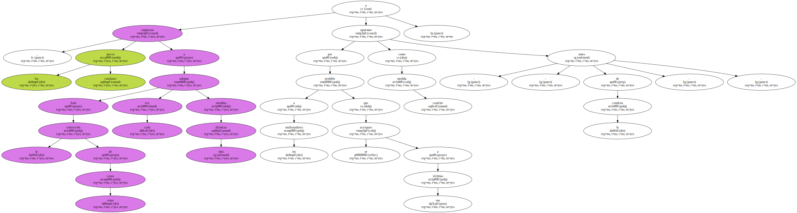El problema surge cuando no hay medios para que el alejamiento se cumpla.
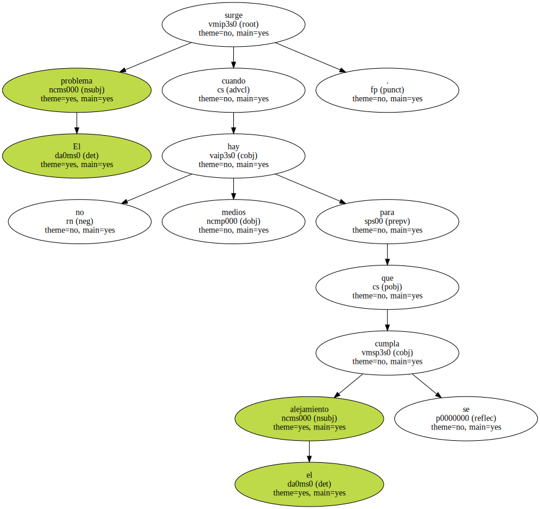La fiscalía del Tribunal Superior de Justícia de Catalunya alerta en su memoria del 2001 del " difícil control " del acatamiento de la medida.
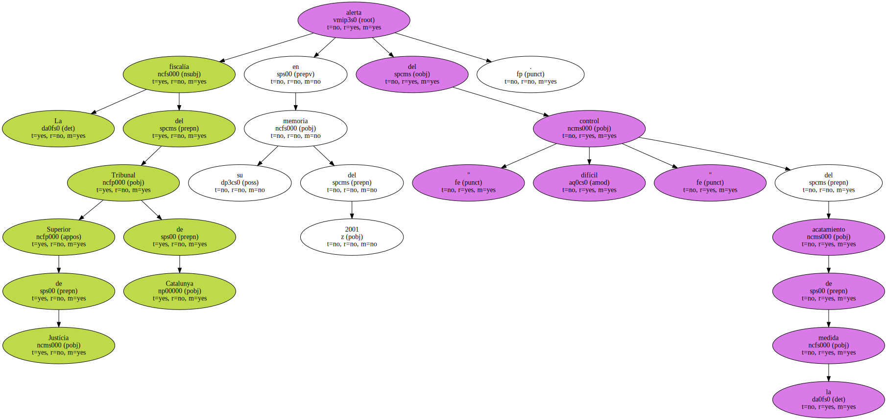En 32 de las 74 sentencias condenatorias por violencia doméstica dictadas en el año pasado en Barcelona se acordaron medidas de alejamiento.
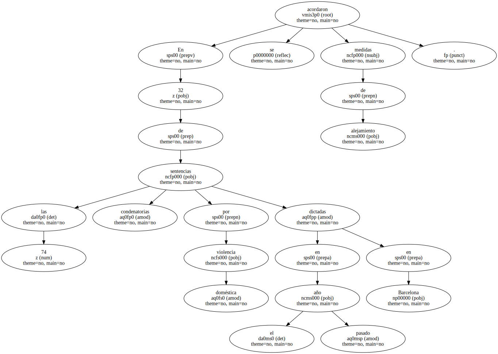La mayoría de las denuncias acaban en un juicio de faltas al no apreciarse la existencia de delito.
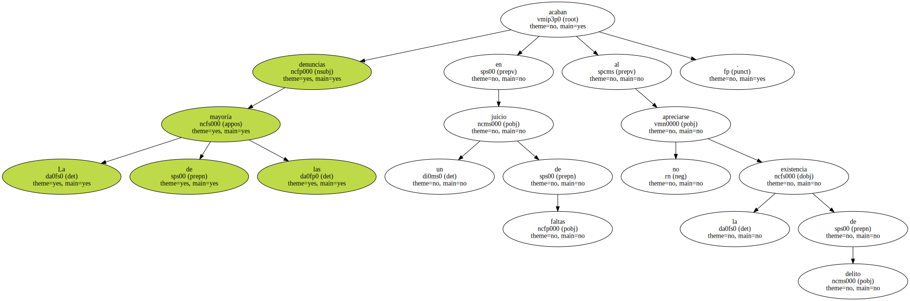En el 2001 se dictaron 91 sentencias de faltas absolutorias y 56 condenatorias ( 20 prohibían al agresor acercarse a la víctima ).
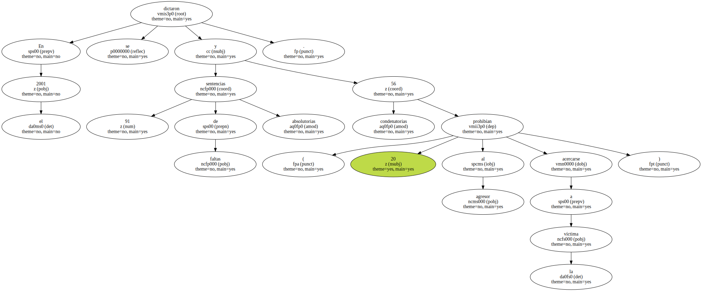Los tribunales celebraron otros 19 juicios en los que existía delito , dictando una sola sentencia absolutoria y 18 condenatorias ( en 12 se impuso la pena de alejamiento ).
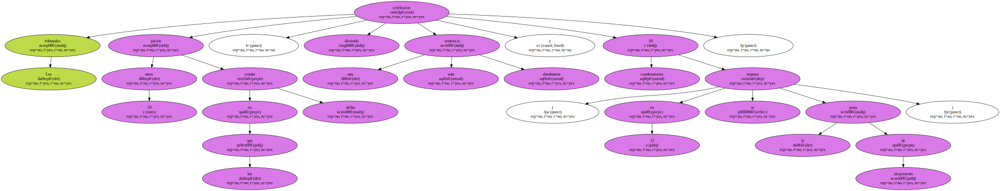Los jueces de instrucción que investigan las denuncias por malos tratos también aplican con mayor asiduidad y de forma cautelar la prohibición de acercamiento a la víctima.
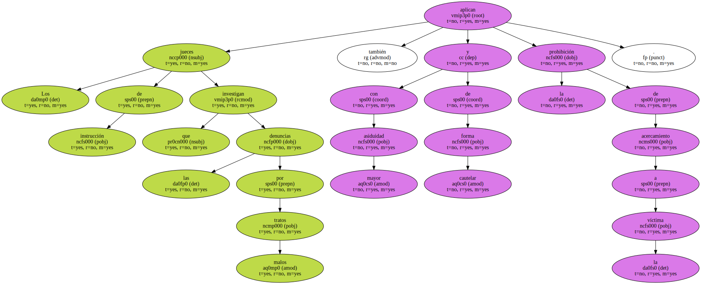En el 2001 , la fiscalía de Barcelona solicitó 93 y los tribunales concedieron 87.
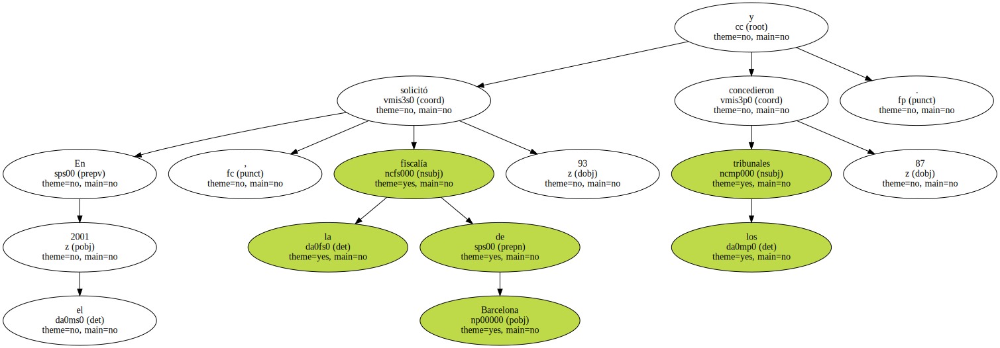A pesar del incremento de las órdenes cautelares de alejamiento , la fiscalía desvela la dificultad existente para controlar y evitar que el agresor se acerque a la víctima.
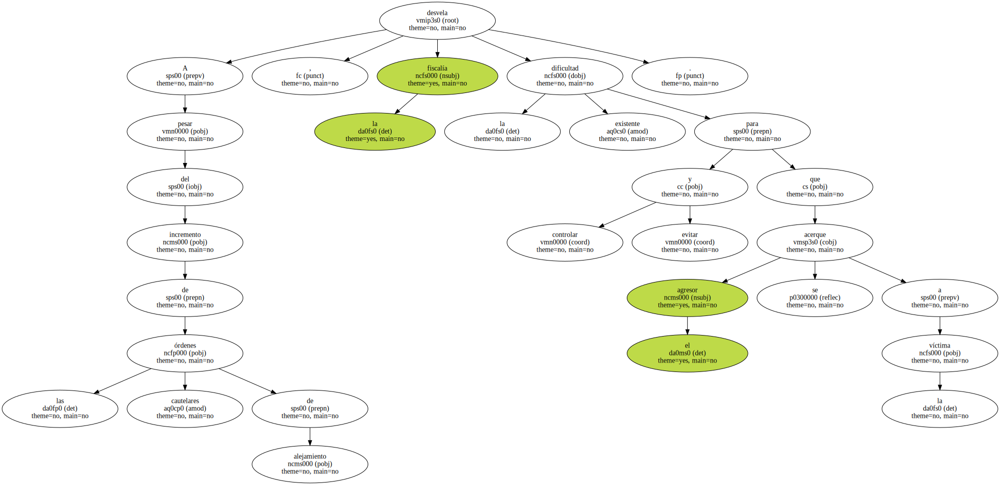" Se intenta proteger al perjudicado , aunque la efectividad de la medida es de muy difícil cumplimiento ya que depende del acusado . Sólo se puede actuar cuando ya se ha quebrantado la medida " , asegura el abogado penalista Miguel Capuz.
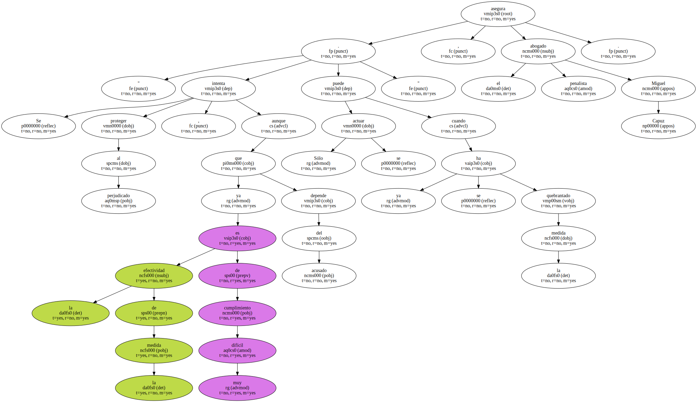El informe de la fiscalía relata que ante los incumplimientos no se están adoptando " medidas que impliquen una mayor limitación de la libertad personal del agresor ".

Destaca que " especialmente son pocos los supuestos en los que , pese a la evidente situación de riesgo en la que se está la víctima y ante las reiteradas denuncias de incumplimiento de las medidas de alejamiento adoptadas , se acuerde la prisión provisional ".
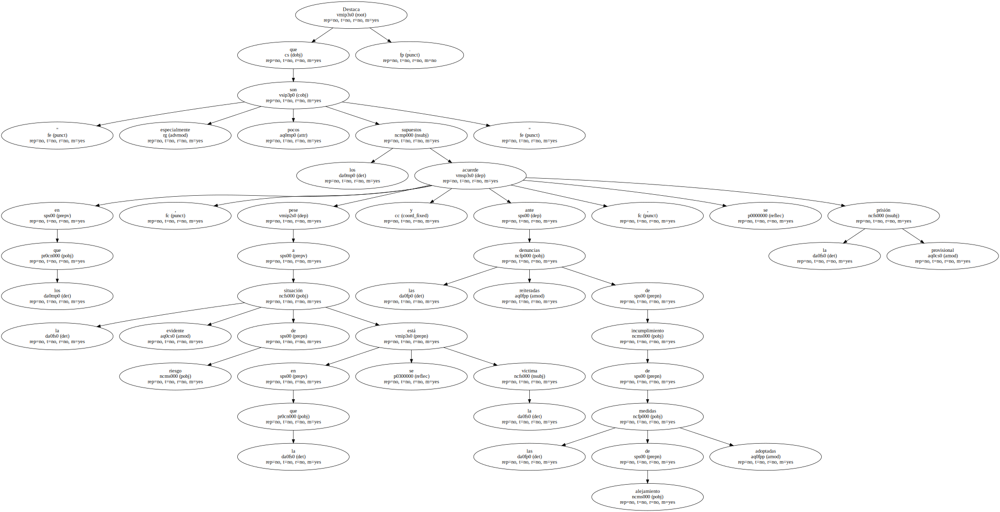Estas circunstancias pueden llegar a desvirtuar la medida.
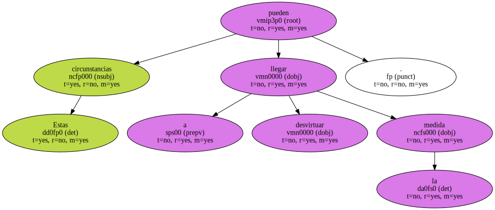PROTECCIÓN ESPECIAL.
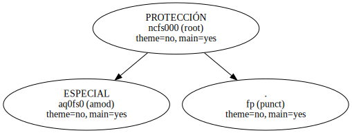Los fiscales y los jueces aplican medidas más drásticas ante casos de extrema gravedad.
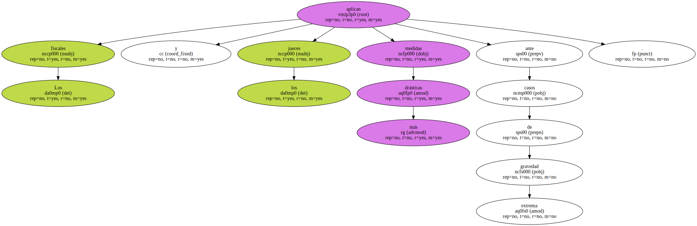En 13 supuestos se acordó el año pasado el establecimiento de un servicio policial de vigilancia y protección personal de la víctima.

Los agentes , además , debieron acompañar en 45 ocasiones a las perjudicadas a los juzgados para evitar incidentes con el agresor.
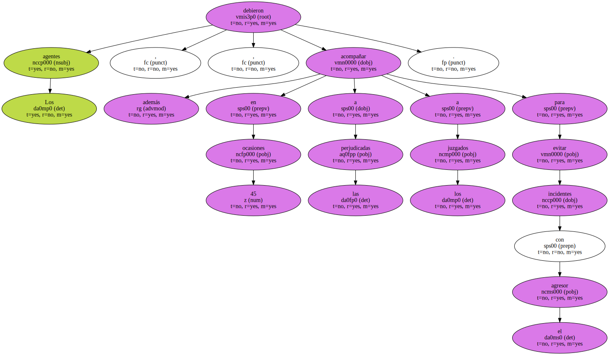" En casos muy graves , se puede acordar la vigilancia de la víctima todo el día o acompañarle a comprar al trabajo o a la escuela de su hijo . Hay otros sistemas de control , como la contravigilancia o el contacto telefónico con los agentes " , afirman los Mossos d'Esquadra.
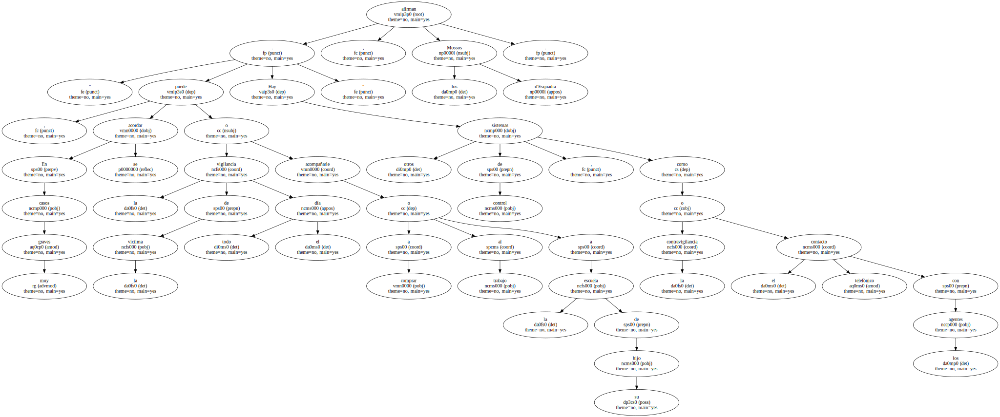En Catalunya se ha experimentado la posibilidad de que las víctimas lleven una alarma en la muñeca para contactar con la policía.
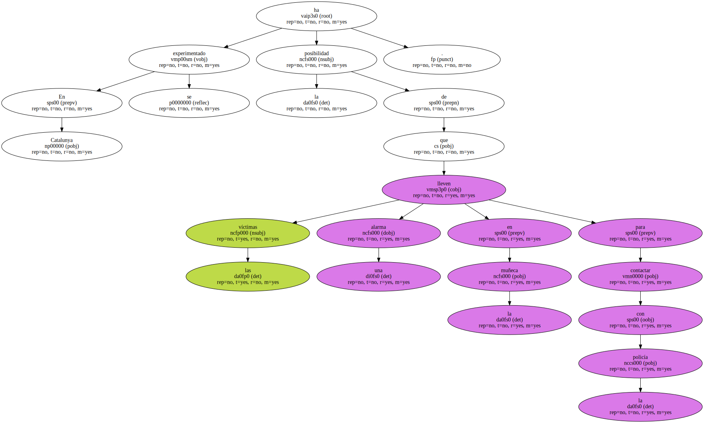En el plan participó un grupo de mujeres de Girona , pero se comprobó que no era efectivo ya que sólo funcionaba en el domicilio y era más fácil que la afectada llevara un teléfono móvil.
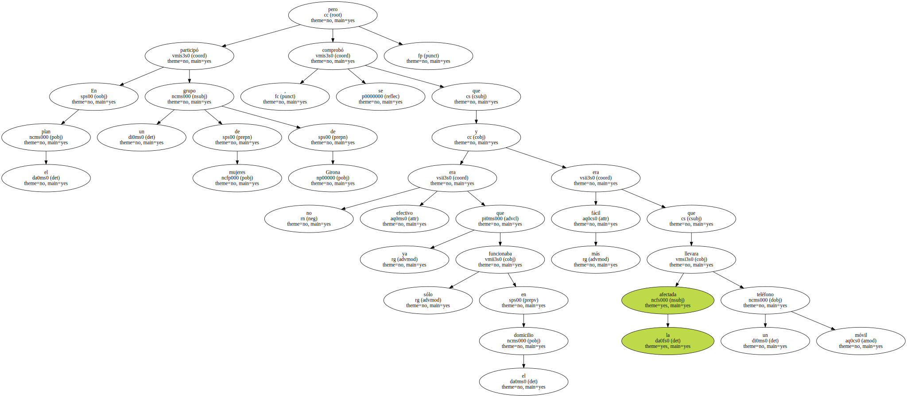El servicio de violencia doméstica de la fiscalía de Barcelona incoó el año pasado 335 diligencias de investigación y recibió 576 denuncias.
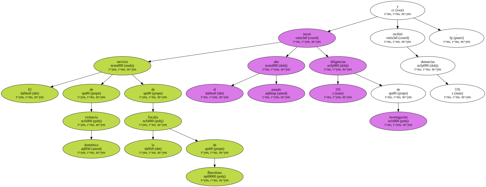